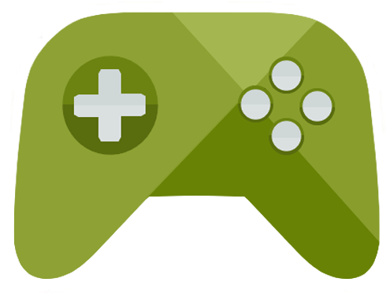

About the Website
This website is designed to cater to the friendly gamers out there who are also frugal. We all know the feeling of looking at a game that we want to play with our friend and saying "Phew! That is way too expensive!". The patient gamer will just wait until the game is on sale before buying it. Putting a game on your steam wishlist is an easy process, but the games that your friends own are something that constantly expanding. Not only this but you have to click in and go to the store page for each item your friend owns. Then you might be tempted to get something that is not on sale. This site also allows you to view your friends play time on specifically Super Auto Pets. If you're feeling competitive you can compare your stats to your friends and see who's on the leaderboards.
Website Overview
The general idea for this website is displaying discounted games from your steam library. Steam doesn't have an incredible way of showing you what is on sale at any given moment. You have to manually search for a game or just find it on the friends page and click into each game manually. This takes a lot of time because you have to search for them each individually, got to their page, and then back to the home page or your friends page for another search. This makes it a lot easier to spend money because you have to look at all of the game, including the ones not on sale, to analyze your friend's games.
There are currently very few or no websites that specifically collect sales data from your friends on steam and show it in an organized fassion. There are websites that show you discounts but make you buy them on their website, and there are websites that just sell game keys at lower rates, but none that I can see link you back to the original website that actually made the sale in the first place. Not having to go through a third party payment method would be extremely useful and probably save people money.
Similarly there are few websites out there that will let you add your friends to a stat board. Sure there are plenty of leaderboards out there but how many can you personalize to your friend group. No need to keep track on a discord or excel document. Just put your friends name into the search box and it will collect that data for you.
About the Sales Table
This table uses an API to collect people's Steam libraries, and then pick out only the ones on sale for your viewing pleasure. Unlike other websites I will not show you any other categories other than steam sales. I will show you the header picture for the game, its name, the current price, and how much it is on discount for. No full priced games and no filtering results. This is purely designed as a way to browse games currently on sale. The only order to the games is that of collecting all of the sales games from the API. I hope this feels more like a randomized viewing experience than one organized and designed to show you the most popular items. Go to the "Sales table" tab to view this table of sales games
Why This Table
You should use this site if you are just wanting to browse a friend's games that are on sale. There are no extra parameters to this part of the website. There is only on text field to enter data for your SteamID, nothing else to clutter the page. This site is for the people who want a simple website and nothing else. Enjoy the scrolling with out pop out windows, ads, auto play videos, or any other kind of distractions.

About the Stats Page
Also, go explore your stats page! Here, you can view your stats across all the games you play on Steam. You'll be able to see your in-game progress, stats, and achievements, and even compare it with friends! The page is designed to help you visualize your stats in a neat, organized fashion that doesn't require you to see the world's stats and feel bad for not being #1.
You can use the stats page to just view your stats, or you can add friends and compare data between yourself and them. Check out who has the most achievements, who is the farthest in the game, who has the most items, who has played the longest, and the list goes on. Add your friends using the search bar so that their information can be displayed.
If you want to compare stats with a friend, click on the tab above labeled "Stats" to go to the stats comparison page. There, you will be able to use a search box to search for and add any number of friends you would like to compare stats with. A table will be provided with different stats to compare, and you can rank yourself and your friends based on any of those stats to see who is the farthest ahead or behind.